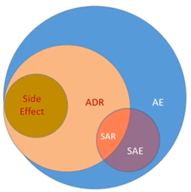

AE Domain
AE的定义
“any untoward medical occurrence in a patient or clinical investigation subject administered a pharmaceutical product and which does not necessarily have to have a causal relationship with this treatment” (ICH E2A). 节选自ICH的话，可以看出AE指发生的任何不良医疗事件，不一定与治疗有因果关系。

AE: adverse event 不良事件
ADR: adverse drug reaction 不良药品反应
SAE/SAR: serious adverse event/reaction 严重不良事件/反应
side effect: 副作用
| Variable | Comments | ||||||
|---|---|---|---|---|---|---|---|
| AETERM | topic变量；req变量； AE domain仅展示真实发生了的AE,所以不存在–OCCUR, –STAT,--REASND等变量； AE的记录：一般是当AE发生了任何变化（严重程度，相关性，采取的措施，转归等），都需要重新记录一条AE |
||||||
| AEPRESP | CRF预设了一些关注的AE，设置AEPRESP=Y； 由于AE只能放真实发生的AE，当这些被关注的AE是否发生都想保留这部分信息，可在FA Domain中展示
|
||||||
AEBODSYS AESOC |
AE采用MedDRA编码，其中SOC是primary SOC，AE编码可以根据发病原因，也可以根据发病部位进行编码，根据需要决定primary SOC。而AEBODSYS根据sponsor需求决定，并不一定是AESOC。 | ||||||
| AETOXGR | 根据CTCAE收集的严重程度，设置成级别中的数，如 GRADE 2，则 AETOXGR = 2. | ||||||